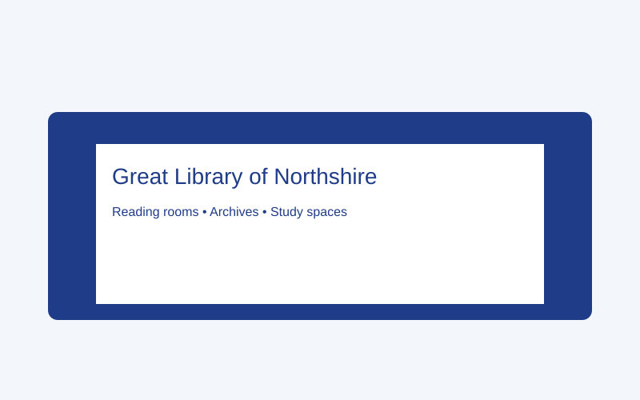
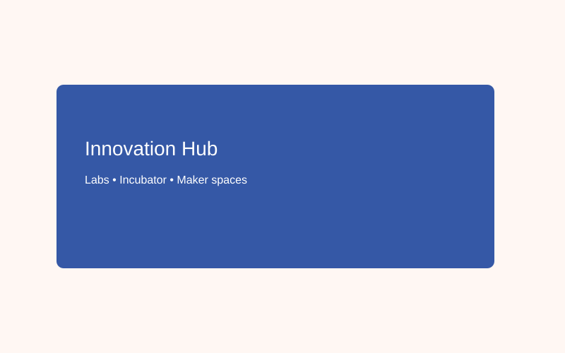
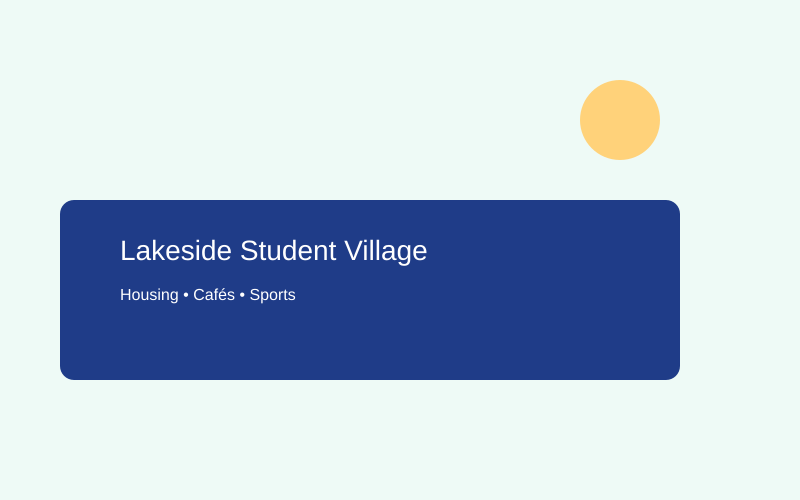

Welcome to Windsmere University
Windsmere University is an educational training example used for teaching website-building, branding, and higher-education design in classroom settings. The content is for instructional use only; see the footer for the site note.
Windsmere combines historic campus spaces with modern research labs and an emphasis on emerging technologies and sustainability.
Quick Facts
- Founded: 1896
- Student body: 18,000 (illustrative)
- Location: Windsmere, Northshire (illustrative)
Campus & Facilities
Central Quads & Library

Grand reading rooms, 24/7 study spaces, and archival special collections.
Innovation Hub

Incubator spaces for student startups and industry partnerships.
Lakeside Student Village

Student housing, cafés, and sports facilities by the Wynd.
Courses & Programmes (selected)
Windsmere emphasises both traditional disciplines and rare, cutting-edge programmes that reflect industry needs.
BSc Computer Science (Hons)
Core: Programming, Data Structures, Systems, AI Foundations.
BSc AI & Ethics
Interdisciplinary study of machine learning, fairness, and governance.
MSc Quantum Computing
Quantum algorithms, error correction, and practical applications.
MSc Autonomous Systems & Robotics
Perception, control, human-robot interaction.
BSc Cybersecurity & Digital Forensics
Network security, malware analysis, incident response.
BSc Synthetic Biology
Biodesign, genetic circuits, lab safety & ethics.
MSc Human-Robot Interaction
UX for robotics, social robots, evaluation methods.
Diploma: Edge & Cloud Computing
Distributed systems, edge orchestration, real-time data.
Certificate: Neurotechnology & Interfaces
Intro to brain–computer interfaces and neuroethics.
Research Centres
Centre for Renewable Energy Futures
Wind, tidal and hydrogen research projects and industry tests.
Institute for Cognitive Systems & AI
Machine learning, robotics, and ethical governance research.
Quantum Systems Lab
Device engineering and algorithms for quantum hardware.
BioDesign & Synthetic Biology Group
Applied research in biotechnology with safety oversight.
Admissions Requirements
General entry requirements vary by programme. Below are typical expectations.
| Level | Typical Requirements |
|---|---|
| Undergraduate (UK) | A-levels (or equivalent) — usually 3 A-levels including relevant subjects (e.g., Mathematics for computing). Personal statement and one academic reference. |
| Undergraduate (International) | Equivalent secondary qualification (e.g., IB Diploma). English language proficiency (see International section). Credential evaluation may be required. |
| Postgraduate (Taught) | Bachelor's degree in a relevant subject (2:1 or equivalent). For specialised courses (e.g., Quantum Computing), a strong mathematical background is usually required. One academic reference and a statement of purpose. |
| Research Degrees (MPhil/PhD) | Relevant postgraduate degree, research proposal, supervisor match, and academic references. Applicants may be invited to interview. |
Additional Requirements for Advanced Programmes
- AI & Robotics: Demonstrable programming experience (Python/ROS), mathematics for machine learning.
- Quantum Computing: Undergraduate maths/physics background; prior coursework in linear algebra and algorithms recommended.
- Synthetic Biology: Prior lab experience and coursework in molecular biology recommended; applicants must agree to lab safety training.
- Cybersecurity: Prior computing experience and understanding of networks are advantageous.
Application Process
- Submit online application via the Apply page.
- Provide transcripts, references, and a personal statement.
- Interview or technical assessment for some programmes.
- Offer decision communicated by email.
Apply
International Applicants — Important Clause
International students are welcome. Applicants must:
- Hold a recognised secondary or higher education qualification equivalent to UK entry requirements.
- Demonstrate English language proficiency (e.g., IELTS/TOEFL) where English is not the primary language of instruction.
- Comply with UK immigration and visa regulations for study — the admissions materials provide guidance, but applicants should consult official government resources for exact requirements.
- Provide credentials and academic transcripts (official translations where applicable).
- Meet any programme-specific prerequisites. International applicants may be asked for proof of funding or to participate in pre-arrival orientation.
Note: This site is a training resource. For real visa guidance, consult the official government website.